첫번쨰 이유
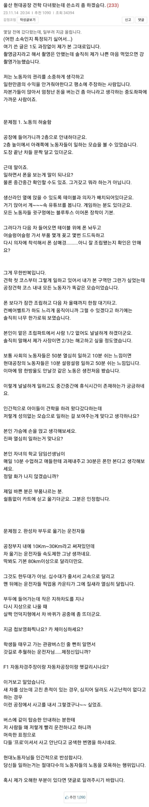
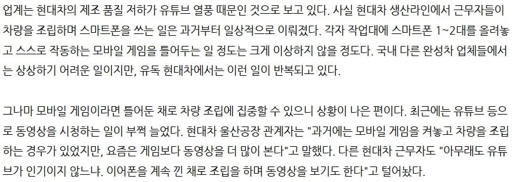
현대차 울산공장 와이파이 에디션, 폰게임 에디션, F1 에디션
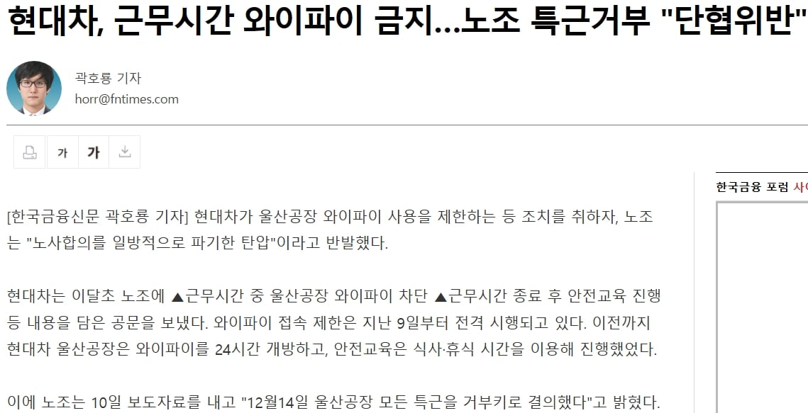
현대차 울산공장 와이파이 사용을 제한하자 "울산공장 모든 특근 거부"로 응수
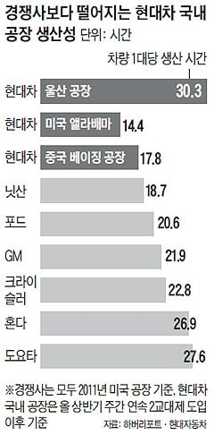
생산성 최악
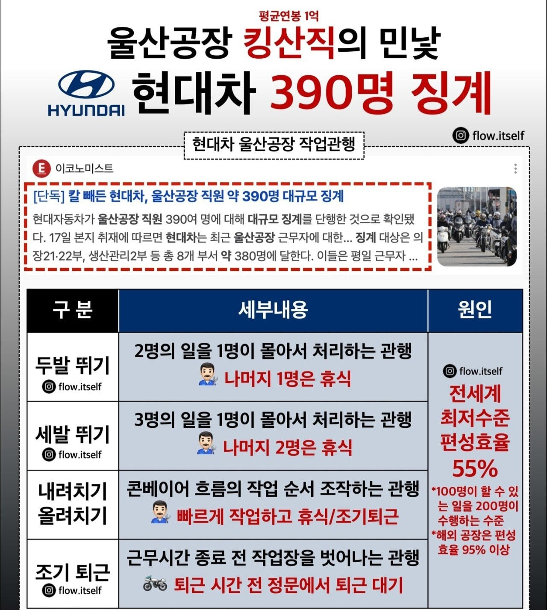
편성효율 최악
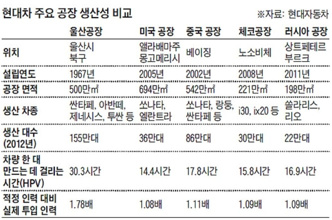
해외 현대차 공장들과 비교해도 생산성 최악, 적정인력대비 1.78배 투입
흠... 그럼 다른 현기차 공장은 어떨까?
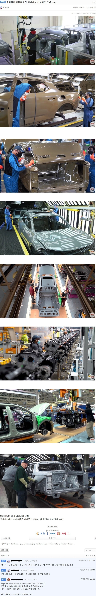
미국 현대차 공장
그럼 국내는?
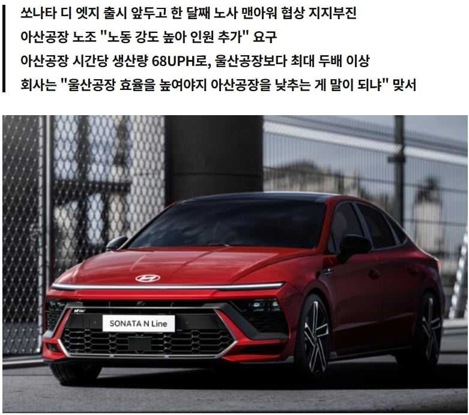
아산 현대자동차 공장은 UPH(시간당 생산 대수) 울산공장의 최소 두배이상.
아산 현대차노조는 이번 전면파업은 대빵인 울산노조 따라나갔다곤 하는데 UPH 울산공장이랑 똑같이 맞추자는건 울산노조들이 안들어줬는지
협상카드에 없음.
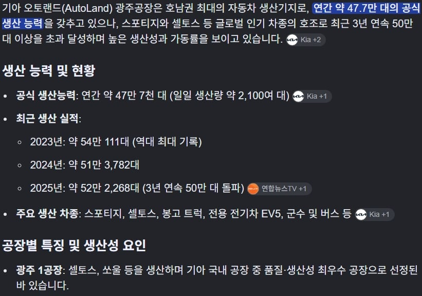
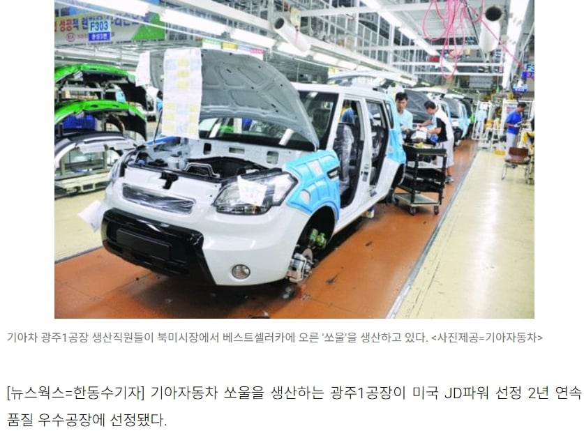
현대자동차그룹의 자회사인 기아자동차의 광주공장은 목표치 초과달성에 품질도 우수해서 과거 미국 JD파워에서 2년연속 품질 우수공장에 선정되기도함
이번 전면파업에 동참하지도 않음.
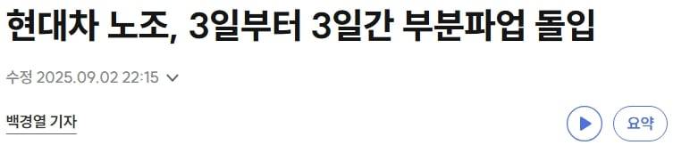
그런데 현대자동차는 울산노조 주도하에 2025년에도 가볍게 3일동안 부분파업 해주시고
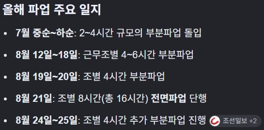
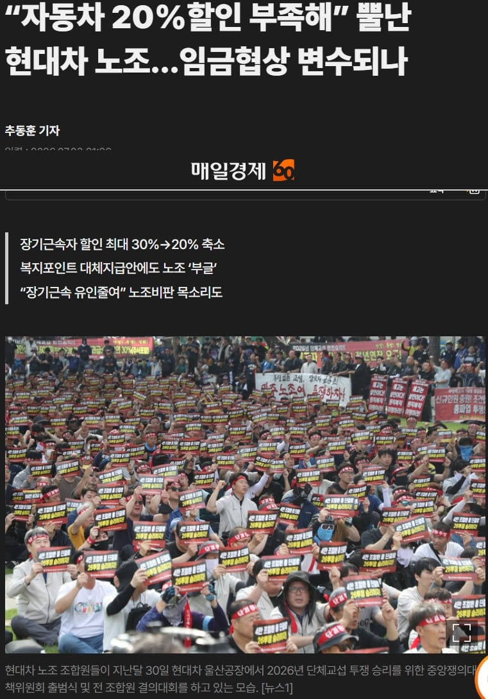
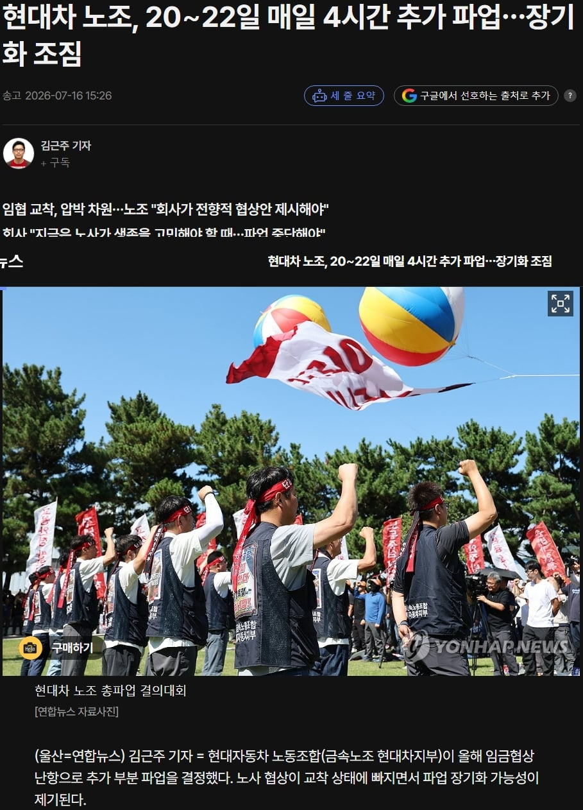
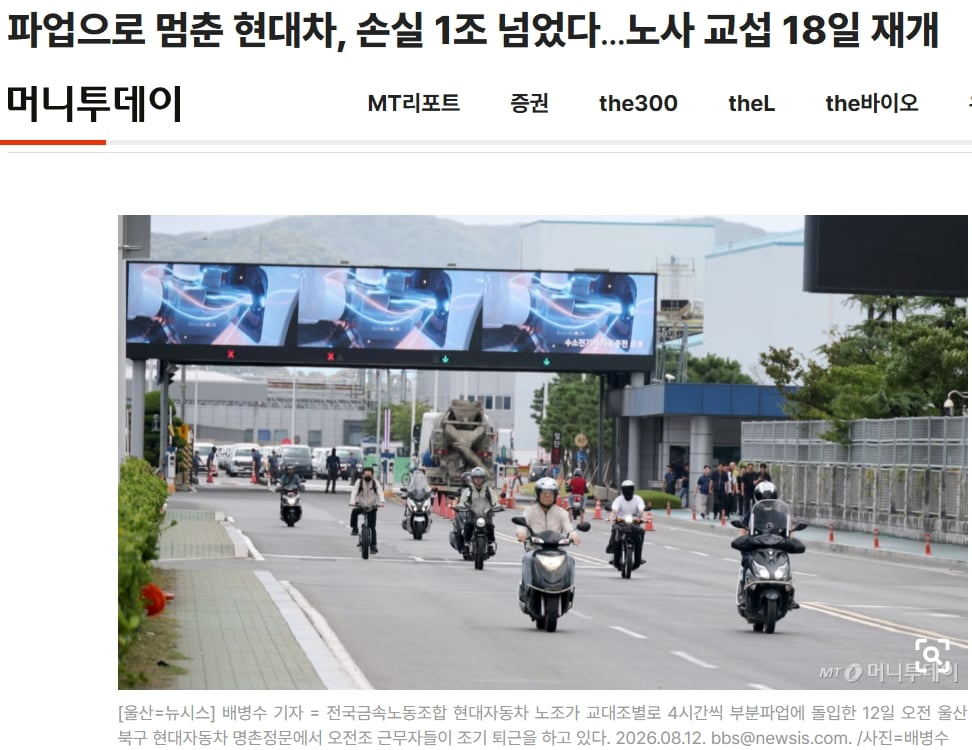
2026년에는 7월에도 부분파업, 8월초부터 중순까지 부분파업해서 이미 8월 14일까지만 해도 올해 부분파업으로 손실규모 1조원 넘었는데
거기에 19일에 기어이 전면파업 때려버리면서 3300억 손실 추가함
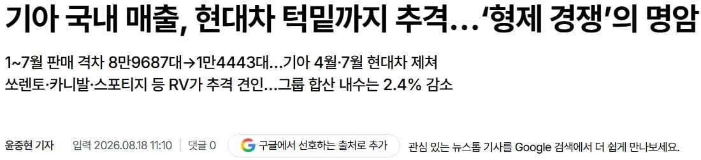
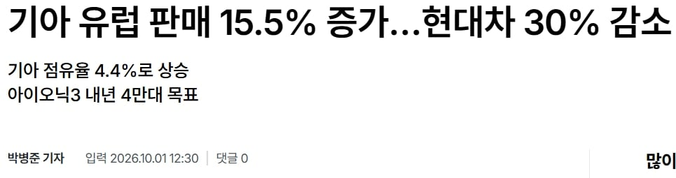
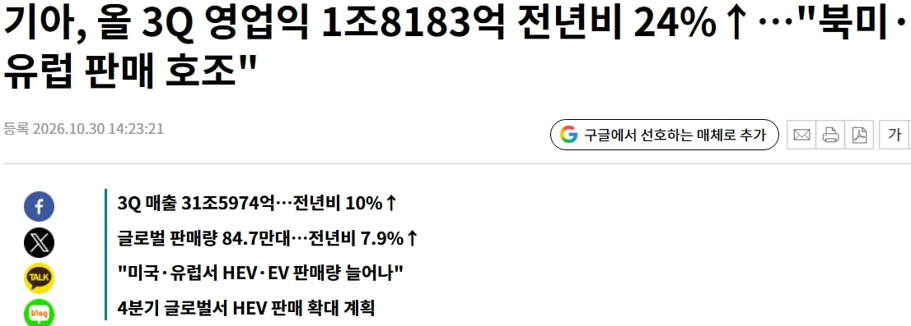
이렇게 생산성, 품질면에서 울산노조가 제작하는 현대차보다 기아차가 나으니 기아가 국내판매량 턱밑까지 추격,
유럽에서현대차 30% 판매량 하락할 때 오히려 기아차는 15.5%가 늘어버림
두번째 이유
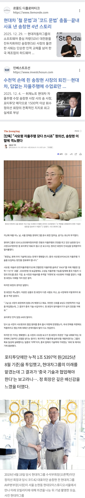
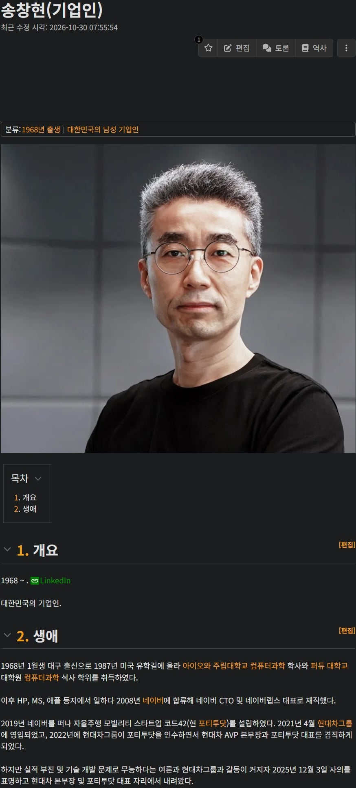
'샤오펑 자율주행 갖다 쓰시죠'
아............
울산현대차노조+송창현 환장의 콜라보
ㄴㄴ 포티투닷